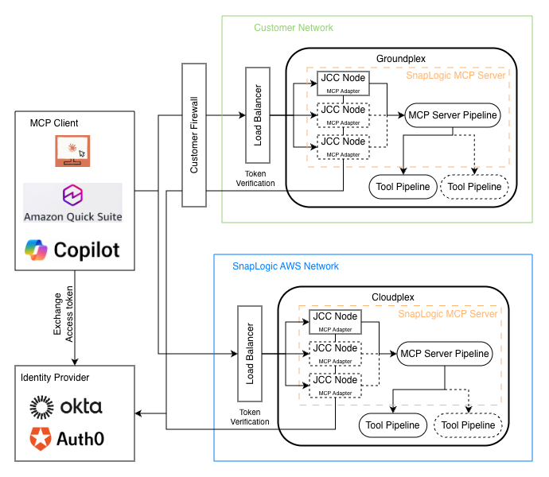

Model Context Protocol (MCP)
Learn how SnapLogic implements the Model Context Protocol (MCP) to enable AI agents to discover and invoke your pipelines as tools.
MCP in SnapLogic
The Model Context Protocol (MCP) is an open standard that enables AI models to interact with external systems in a structured, secure way. MCP defines how servers expose tools—discrete operations that AI agents can discover, understand, and invoke.
SnapLogic implements MCP to bridge the gap between AI agents and your enterprise integrations. The MCP Server is a new asset that operates as a service. With the MCP Server, you can expose tools via SnapLogic that AI models can call, enabling intelligent automation across your organization.
The MCP Client Snap Pack are connectors that enable you to connect to your AI agents. The MCP Client Snaps are used in Agent pipelines, built using AgentCreator Snaps.
MCP Server
The SnapLogic MCP Server enables you to expose pipeline functionality through the Model Context Protocol for AI agent integrations. With our MCP Server, you can transform any SnapLogic pipeline into a callable tool that AI models can discover and invoke through a standardized, secure protocol.
Key capabilities:
- Create MCP Server assets from Manager or Designer
- Configure authentication using MCP policies
- Choose between Triggered or Ultra execution modes
- Monitor MCP Server requests and pipeline executions
See MCP Server Setup to get started.
MCP Client
The MCP Client Snap Pack enables your pipelines to connect to external MCP servers as a client. This allows you to:
- Discover tools from external MCP servers
- Invoke tools and retrieve results
- List and read resources from MCP servers
- Chain multiple MCP servers together
Available Snaps:
- MCP Function Generator: Converts MCP server tools into function definitions for LLMs
- MCP Invoke: Executes operations on MCP servers (tools/call, resources/read, resources/list)
See MCP Client Snap Pack for details.
Architecture
MCP in SnapLogic follows a client-server architecture:
- MCP Client (AI agent or application) connects to the MCP Server endpoint
- Authentication is validated using the configured MCP policy
- Tool Discovery: Client calls
tools/listto discover available tools - Tool Invocation: Client calls
tools/callwith tool name and parameters - Pipeline Execution: MCP Server executes the configured pipeline on the selected Snaplex
- Response: Pipeline output is returned to the client in MCP format
Supported transports:
- Streamable HTTP (
/mcpserver/{serverId}/mcp): Stateless, recommended for production

Capabilities
| Supported | Not Supported |
|---|---|
|
|
Data and App Integrations
MCP Server leverages SnapLogic's extensive library of 1,000+ pre-built connectors to enable AI agents to interact with enterprise systems:
- Databases: Oracle, SQL Server, PostgreSQL, MongoDB, Snowflake, and more
- Applications: Salesforce, Workday, SAP, ServiceNow, NetSuite
- Cloud Services: AWS, Azure, Google Cloud Platform
- APIs: REST, SOAP, GraphQL, gRPC endpoints
- Files: S3, SFTP, Azure Blob, local file systems
Any pipeline that connects to these systems can be exposed as an MCP tool for AI agents to invoke.
AgentCreator
AgentCreator is SnapLogic's platform for building AI agents that leverage MCP tools. Use AgentCreator to:
- Design agent workflows with Prompt Composer
- Connect agents to MCP Servers for tool invocation
- Visualize agent execution with Agent Visualizer
- Build RAG (Retrieval Augmented Generation) pipelines
See AgentCreator Overview for more information.
Policy Manager
The SnapLogic Policy Manager provides the authentication and authorization layer for MCP Servers. Available policies include:
- MCP OAuth2 Client Credentials rule: For application-to-application authentication
- MCP OAuth2 JWT Validator rule: For validating JWT tokens from identity providers
- Authorize by Role: For role-based access control, used with the Anonymous Authenticator rule
- Anonymous Authenticator: For development and internal use
See Create Authentication Policy to configure authentication for your MCP Server.
Best Practices
- Use descriptive tool names: AI agents use tool names and descriptions to understand what each tool does, making their utility clear and specific.
- Define clear parameter schemas: Well-defined input/output schemas help AI agents correctly invoke your tools.
- Implement proper error handling: Return meaningful error messages that help AI agents understand and recover from failures.
- Use OAuth2 for production: Always use OAuth2 authentication (Client Credentials or JWT policies) for production MCP Servers.
- Set appropriate timeouts: Configure timeouts based on expected pipeline execution time to prevent hanging requests.
- Use Ultra mode for low-latency: For time-sensitive AI agent interactions, use Ultra run policy.
- Monitor execution metrics: Regularly review API Metrics in Monitor to track usage and identify issues.
- Chain Function Generators: Aggregate multiple tools in a single MCP Server by chaining Function Generator Snaps.
FAQ
What is the Model Context Protocol (MCP)?
MCP is an open standard that defines how AI models interact with external systems. It provides a structured way for AI agents to discover and invoke tools, read resources, and receive responses.
How is MCP different from regular API calls?
MCP provides a standardized discovery mechanism (tools/list) that allows
AI agents to understand what operations are available and how to call them. This enables AI
models to dynamically discover and use your pipelines without hardcoded integrations.
Which AI agents can connect to SnapLogic MCP Server?
Any MCP-compatible client can connect, including Claude Desktop, custom AI applications, and other MCP clients. The AI agent needs to support either Streamable HTTP or SSE transport.
Do I need to modify my existing pipelines?
Yes, MCP Server Pipelines need to use Function Generator Snaps to define tools and handle
both tools/list and tools/call requests. See Create MCP Server Pipeline for guidance.
What authentication methods are supported?
MCP Server supports OAuth2 (Client Credentials and JWT Validator), API Key, and Anonymous authentication via MCP policies.
Can I expose multiple tools from a single pipeline?
Yes, chain multiple Function Generator Snaps together to expose multiple tools from a single MCP Server Pipeline.
How do I troubleshoot MCP Server issues?
Check API Metrics in Monitor for request-level details, and pipeline execution logs for execution errors. Common issues include authentication failures and timeout errors.